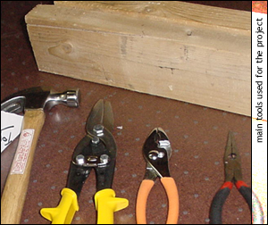
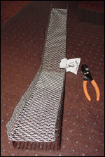
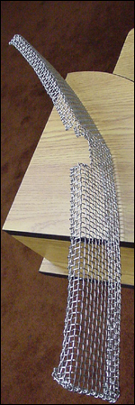
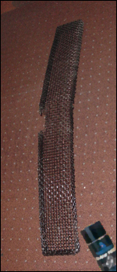
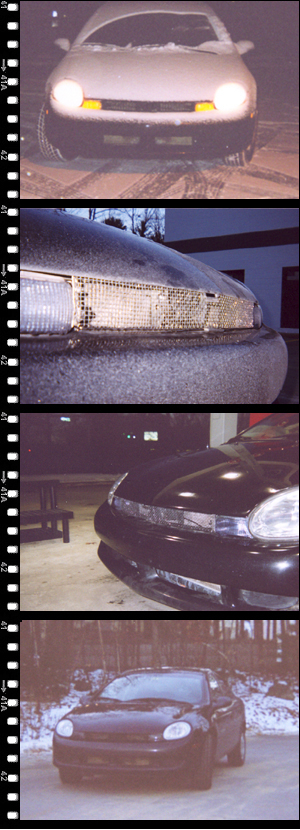
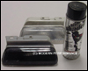

Dodge Neon a popular budget car on the North American market.
An idea to redesign the ugly-looking radiator grill on, at that time, my car, simply dropped onto my shoulders out of nowhere. Luckily, I had a big piece of universal industrial grille in the trunk of my car, which I picked up in Northern New Hampshire. So I went straight ahead into collecting a set of instruments I needed to start working on this project immediately.

Main tool set for the project

1). measuring and cutting the grille to the shape of a final product

2). all corners to fit under the hood as well as a little gap for opening the hood

3). a first layer of paint

Few weeks later

Tint-spray for the directional signals (to completely black out the front of the car)